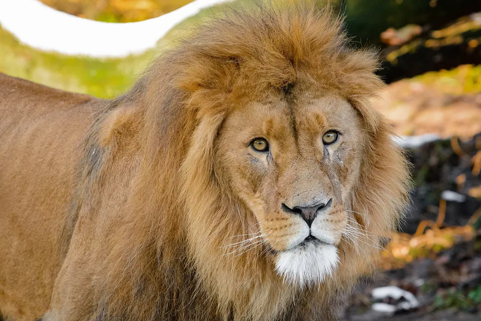
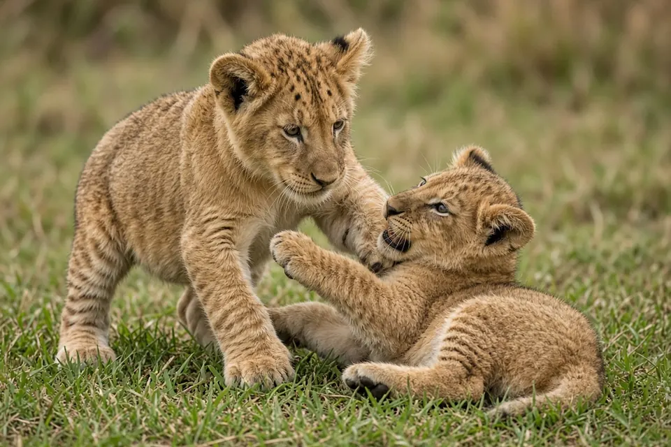

Home › Species › How long do lions live in the wild versus in zoos?
How long do lions live in the wild versus in zoos?
Wild male lions rarely live past 12 years, wild lionesses can reach 16 to 19 years, and lions in zoos may live into their late teens or early 20s. The lion (Panthera leo) is the only truly social big cat. Wild lions live in prides built around related females, mainly in sub-Saharan Africa, with one small population in and around Gir forest in western India. The species is listed as Vulnerable on the IUCN Red List, and the IUCN Cat Specialist Group estimated roughly 22,000 to 25,000 adult and subadult lions in Africa in 2025.

Jump to: Quick facts | Lifespan | Appearance | Pride life | Hunting | Roaring | Where lions live | Status
Quick facts
| Scientific name | Panthera leo |
|---|---|
| Weight | 110 to 272 kg (males are much heavier than females) |
| Head and body length | 137 to 250 cm, plus a 60 to 100 cm tail |
| Lifespan | Wild males rarely past 12 years; wild females 16 to 19; zoos into the early 20s |
| Litter size | 1 to 4 cubs |
| Range | Sub-Saharan Africa; Gir landscape, Gujarat, India |
| IUCN Red List | Vulnerable, assessed 2025 (northern subspecies P. l. leo: Endangered) |
Weight and length are IUCN SSC Cat Specialist Group ranges and cover both sexes and all populations. The lifespan row is split by sex and by wild versus zoo; the sources and the date checked are in the lifespan section.
How long do lions live in the wild versus in zoos?
Wild male lions rarely live past 12 years. Wild lionesses live longer: one zoo species page says up to 16 years, and the long running Serengeti field study records a maximum of 19. Lions in zoos may live into their late teens or early 20s. A single "12 to 18 years" hides that split. The pages and papers in the table were opened on 20 November 2026.
| What was measured | Figure | Source, opened 20 Nov 2026 |
|---|---|---|
| Wild males, how long most survive | Rarely past 12 years | Smithsonian's National Zoo; University of Minnesota Lion Research Center field guide |
| Wild females, zoo species page | Up to 16 years | Smithsonian's National Zoo |
| Wild maximum from the Serengeti studies | 19 years for females, 15 years for males | Packer 2010, Current Biology |
| Oldest Serengeti lion named in a 2024 dispatch | Lychee, a lioness, 19 years | Philson 2024, Current Biology |
| One range for the species, not split by sex or captivity | 12 to 18 years | IUCN SSC Cat Specialist Group |
| Lions kept in zoos | Late teens or early 20s | Smithsonian's National Zoo |
The gap between males and females is social. A male holds a pride only while he and his coalition can keep rival males out. Smithsonian's lion page says resident males hold a pride for about two years on average and are often pushed out by another coalition. A male who loses that contest is killed or driven off. Lionesses usually stay in the pride where they were born, so they face fewer takeover fights. Packer's 2010 quick guide, written from the same Serengeti work, puts the wild maximum at 19 years for females and 15 for males. Females first give birth at 3 to 4 years and show a marked drop in breeding by about 14. Males typically start breeding at 4 to 5 years, so a male who dies around 12 has had only a short run as a pride holder. How the pride is built, and why new males kill cubs, is covered in why lions live in prides and why male lions kill cubs.
The 19 year female figure is a named animal, not a rounded slogan. Philson's 2024 dispatch on a Serengeti social aging study by Lauren Rudd, Craig Packer and colleagues says females live as long as 15 to 19 years, and that nearly all males live about 10 years. The figure caption names Lychee, photographed by Packer, as the oldest recorded Serengeti lion, at 19. The Minnesota field guide, drawn from that known age population, says males rarely reach 12 in the wild and females may live up to 19. Smithsonian's wild lioness line, up to 16 years, is shorter than that field maximum. Both were on the pages we opened. Averaging them would invent a number none of these sources published.
Zoo life takes away the takeover fights, the lean seasons and most of the snaring that cuts wild lives short. Smithsonian states the result in one sentence: lions in zoos may live into their late teens or early 20s. That is a ceiling for animals in human care, not a promise for every zoo lion, and it is not a wild lifespan. The Cat Specialist Group's 12 to 18 years is one range for the species. It matches neither the male field figure nor the zoo ceiling, which is why the row above splits them. The other five species are set out the same way in how long do big cats live?
Check another lifespan
The lion's sex split is the sharpest of the six. Tigers are usually given one wild range for both sexes, and cheetahs are the short lived end of the group.

What does a lion look like?
Lions have a plain tawny coat, a long tail ending in a dark tuft and, in adult males, a mane around the head and neck. The mane makes males look larger and is the most obvious difference between the sexes; no other wild cat shows such a striking visual difference between males and females. Cubs are born with faint spots that usually fade as they grow. Why the mane? Research suggests it is a signal of condition to lionesses and rivals; see why do male lions have manes?
Size varies by region and sex. Adult males are clearly bigger and heavier than lionesses, and large male lions can match or exceed smaller tigers, although the tiger is the largest cat species overall. See the big cat comparison table for side by side sizes.
How does a lion pride work?
A pride is a group of related adult females, their cubs and one or more adult males. The IUCN Cat Specialist Group gives an average of four to six adult lionesses per pride in Africa, with prides ranging from 1 to 21 females. Lionesses usually stay in the pride where they were born, while young males leave and try to win a pride of their own later.
Males often team up in coalitions, frequently brothers or other males that grew up together. A coalition that takes over a pride may kill young cubs fathered by the previous males, which brings the females back into breeding condition sooner; see why do male lions kill cubs? Competition is intense, and a single male rarely holds a pride for long except where lions are scarce.
Pride territories vary hugely with prey. Where prey is plentiful, lions can live at 10 to 40 per 100 km² with territories of 50 to 200 km²; in dry, prey poor areas, home ranges can grow to thousands of square kilometres.
Do male lions hunt?
Yes. Lionesses do much of the cooperative hunting, often stalking and surrounding prey as a group, but males hunt too, especially larger and more dangerous animals such as buffalo, and they hunt alone when they are not with a pride. Lions are also frequent scavengers and will take carcasses from other predators, which makes them especially vulnerable to poisoned carcasses. Most hunts still fail: in one Namibian study lions made 156 kills from 920 attempts. See how often do lion hunts succeed?
Typical prey includes wildebeest, zebra, buffalo, antelope and warthog, depending on what is common locally. Lions spend a large part of each day resting and are most active from dusk to dawn.
Why do lions roar?
A lion's roar advertises territory and helps pride members locate each other. It can carry over several kilometres. Lions, tigers, leopards and jaguars can roar thanks to the structure of their larynx and vocal folds; the snow leopard and cheetah cannot. Our post which big cats can roar explains the anatomy.
Where do lions live?
Lions live mainly in savanna, grassland, open woodland and scrub, not in dense rainforest, so the phrase "king of the jungle" is misleading. They have been recorded as high as 4,240 m in Ethiopia's Bale Mountains. In 2025 their known range was estimated at about 6 percent of their historical range.
The IUCN recognises two subspecies. Panthera leo melanochaita lives in southern and eastern Africa. Panthera leo leo covers West and Central Africa and the Asiatic lions of India, which survive as a single population centred on Gir Forest National Park and Wildlife Sanctuary in Gujarat. That population grew from a tiny remnant in the late 1800s to about 670 adult and subadult lions in 2020, and lions now range across a wider area known as the Greater Gir Landscape.
Lions have disappeared from many African countries, including all of North Africa, and in West Africa they survive only in small, isolated populations.
Because the Gir landscape has no wild tigers, wild lions and wild tigers do not share territory anywhere today; see can lions and tigers interbreed? for why hybrids such as ligers only occur in captivity.
How many lions are left and why are they declining?
Estimates for Africa compiled by the IUCN Cat Specialist Group fell from about 33,000 lions in 2006 to about 25,000 in 2018, and the 2025 estimate was roughly 22,000 to 25,000 adults and subadults. Populations in southern Africa, many in fenced reserves, are stable or increasing, while the steepest losses are in West and Central Africa.
The main threats are conflict with people over livestock, loss of habitat and of the wild prey lions depend on (often through snaring and the bushmeat trade), and a growing illegal trade in lion bones and other parts. The Asiatic population is protected but vulnerable because all of it sits in one landscape, so a single disease outbreak could hit the whole population. Read more on our big cat conservation page.
Frequently asked questions
How long do lions live in the wild versus in zoos?
Wild males rarely live past 12 years. Wild lionesses are reported up to 16 years by the Smithsonian National Zoo and up to a field maximum of 19 years, including a Serengeti lioness named Lychee (Packer 2010; Philson 2024). Zoo lions may live into their late teens or early 20s. All three sources were opened on 20 November 2026.
Do male lions kill cubs?
Yes. When a new male coalition takes over a pride it often kills young cubs fathered by the previous males, so the mothers can breed again sooner. Lionesses defend or hide their cubs; see why do male lions kill cubs?
Where do lions live besides Africa?
The only wild lions outside Africa live in and around Gir forest in Gujarat, western India. They belong to the northern subspecies Panthera leo leo.
How many lions are left in the wild?
The IUCN Cat Specialist Group estimated roughly 22,000 to 25,000 adult and subadult lions in Africa in 2025, plus about 670 adult and subadult Asiatic lions counted in India in 2020.
Do lions really live in the jungle?
No. Lions prefer savanna, grassland and open woodland. The nickname king of the jungle is a figure of speech, not a description of their habitat.
Cite this page
APA: BigCatWise. (2026, November 20). How long do lions live in the wild versus in zoos?. https://bigcatwise.com/lion.html
MLA: "How long do lions live in the wild versus in zoos?." BigCatWise, 20 Nov. 2026, bigcatwise.com/lion.html.
Chicago: BigCatWise. "How long do lions live in the wild versus in zoos?." Last modified November 20, 2026. https://bigcatwise.com/lion.html.
Please check the date you accessed the page and adjust to your teacher's or journal's style guide.
Sources
- Smithsonian's National Zoo and Conservation Biology Institute: Lion
- University of Minnesota Lion Research Center: Aging Lions in Eastern and Southern Africa
- Packer (2010) Lions, Current Biology 20(14): R590-591. DOI 10.1016/j.cub.2010.05.003
- Philson (2024) Social behavior: male and female lions age differently, Current Biology. DOI 10.1016/j.cub.2024.07.048
- IUCN SSC Cat Specialist Group: Lion
- San Diego Zoo Wildlife Alliance: Lion
- Panthera: Lion
- IUCN Red List: Panthera leo, Nicholson et al. (assessed 2025, published 2025)
Figures are rounded summaries of the sources above. Wild populations are hard to count, so estimates change as new surveys are published.